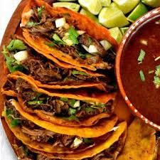

Birria Tacos

Description:
This delicious meal, popularized by LA street cuisine, is an amalgamation of mexican flavors, served alongside a consame used to dip the tacos in. Making this for a party, family gathering, or just for your self will be the best decision you will ever make!
Ingredients:
- Bone in short ribs
- Chuck roast
- White onion
- Quesdilla cheese
- Carrots
- Garlic
- Guajillo peppers
- Bay leaves
- Oregano, cumin, salt, chili powder
- Chicken bouillon
- Corn tortillas
Steps:
- Get a large pot (like, very large)
- Prepare the vegetables (cut, peel, and remove seeds)
- Add every ingredient (except chili powder) to your large pot and fill it to the top with water. Cover the pot and simmer
- Skim the top of the broth, removing debris
- Take out the peppers and blend, add a little broth if needed
- Continue to simmer for more than 3 hours. Remove lid & stir every 40 minutes
- Skim off grease and save to fry the tortillas in
- Remove vegetables (just broth and meat now remaining)
- Chop up the beef and add it to your fried tortilla with cheese
- Serve with broth and enjoy!